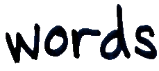

|
recent
news: december
1999: boc realaudio clips now online on the sounds
page. september 1999: skam records re-released boards of canada's 1996 EP 'hi scores' on vinyl & CD. (cat. number SKA008). write
to boards of canada: many thanks to everyone who has written to boards of canada.
|
|
© Hexagon Sun
2000
All images & artwork
© Boards of Canada
Last Updated: 22 February
2000
Maintained by: Hexagon
Sun, PO Box 28607, Edinburgh, Scotland EH14 7YA, U.K.